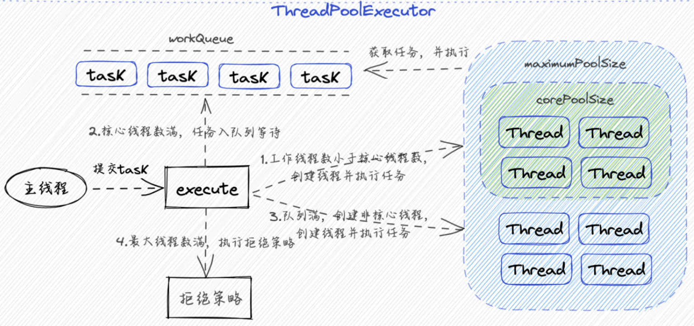

JUC-线程池
为什么要有线程池？
- 开启线程，也就是start的时候并不会直接进入运行状态而是就绪状态，等待cpu将该线程调度到运行状态，需要发生cpu上下文的切换，这样效率非常低
- 线程池就是对线程进行统一的管理和维护，实现对线程的复用，从而减少频繁的创建和销毁线程带来的性能损耗
- 好处：降低资源消耗（重复利用已创建的线程，降低线程创建和销毁造成的消耗）、提高响应速度（当任务到达时，任务可以不需要等到线程创建就能立即执行）、提高线程的可管理性（使用线程池可以进行统一的分配，调优和监控）
线程的创建和销毁是一项开销较大的操作，频繁地创建和销毁线程会耗费大量的系统资源。通过使用线程池，可以事先创建一定数量的线程，并将它们放入池中，需要执行任务时直接从池子中获取复用线程。这样可以避免频繁地创建和销毁线程，提高系统的资源利用率。
线程池创建方式？
- ThreadPoolExecutor构造函数（推荐）
- （Java提供创建）工具类Executors（不推荐，因为任务队列或者最大线程的数量是Integer.MAX_VALUE，容易造成OOM）
- FixedThreadPool：固定数量线程池（core==max），任务队列为LinkedBlockingQueue，是无限长（）
- CachedThreadPool：core为0，max为无限大
- SingleThreadExecutor：core=max=1，任务队列为LinkedBlockingQueue
- ScheduledThreadPool：定时任务
线程池详解
原理

核心点：线程复用
- 创建好固定的线程（核心线程）一直处于运行状态 ---- 死循环
- 将任务对象放到阻塞队列里面，线程获取任务
线程池原理/创建过程：
- 线程池有一个存储线程的集合和一个存储任务的阻塞队列
- 当提交一个任务的时候，判断核心线程是否满了，如果没有满则启动一个核心线程放到线程集合里面，然后执行任务
- 如果核心线程满了，则判断任务队列是否满了，如果没有满那么放入任务队列
- 如果任务队列也满了，创建非核心线程并执行任务（非核心线程一般都是由存活时间的）
- 如果最大线程也满了，那么执行拒绝策略
ThreadPoolExecutor线程池参数详解
其实手撕线程池之后这些参数就很明确
- corePoolSize：核心线程的数量，默认情况下，这些线程是会一直运行的，不会被销毁；但是allowCoreThreadTimeOut，开启后核心线程和非核心线程一样会超时销毁
- maxPoolSize：最大线程的数量，这是当corePoolSize满了并且阻塞队列也满了之后会创建的线程，有存活期 不会一直运行
- keepAliveTime：就是非核心线程存活的时候，这个是当该线程在keepAliveTime时间内没有执行任务就会销毁
- unit：存活时间的单位
- workQueue：任务队列，就是一个阻塞队列，用于存放我们提交的任务对象
- threadFactory：线程池内部创建的线程所有的工厂，可以用来创建核心、辅助线程的方法，也可以自定义线程名称等参数
- handler：拒绝策略，是一个策略模式，在线程池的代码中，当任务队列满时就会触发该接口的方法，所以我们只要实现这个接口方法，再把实现类传入线程池即可，并且方法里还可以拿到被拒绝的任务、线程池对象来实现自己的拒绝逻辑。
拒绝策略类型
- AbortPolicy：抛出异常
- DiscardPolicy：忽视，丢弃任务
- CallerRunsPolicy：执行任务
- DiscardOldestPolicy：从队列踢出最先进入队列的任务
- 自定义，实现RejectExecutionHandler接口，自定义处理器（缓存到redis、本地、主线程执行等等）
为什么不建议使用Executors
工具类Executors（不推荐，因为任务队列或者最大线程的数量是Integer.MAX_VALUE，容易造成OOM）
- FixedThreadPool：固定数量线程池（core==max），任务队列为LinkedBlockingQueue，是无限长（）
- CachedThreadPool：core为0，max为无限大
- SingleThreadExecutor：core=max=1，任务队列为LinkedBlockingQueue
- ScheduledThreadPool：定时任务
无限队列可能导致内存溢出，会使得最大线程数量失效
JUC-线程池
https://yb0os1.github.io/2026/03/22/JUC-线程池/